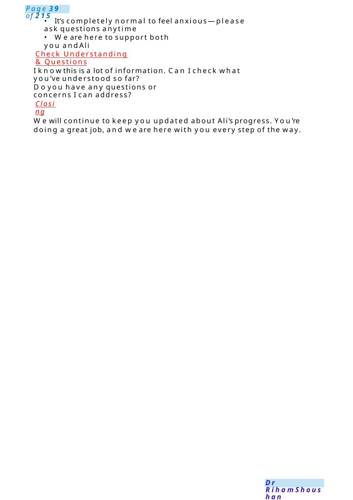
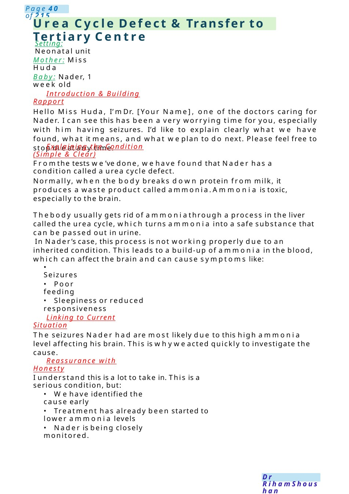

Necrotizing Enterocolitis
• It’s completely normal to feel anxious—please ask questions anytime I knowthis is a lot of information. Can I check what you’ve understood so far?
Scenario Summary
• It’s completely normal to feel anxious—please ask questions anytime I knowthis is a lot of information. Can I check what you’ve understood so far?
Full Original Scenario

- It’s completely normal to feel anxious—please ask questions anytime
- We are here to support both you and Ali
Check Understanding & Questions
I knowthis is a lot of information. Can I check what you’ve understood so far?
Doyou have any questions or concerns I can address?
Closing
Wewill continue to keep you updated about Ali’s progress. You’re doing a great job, and we are here with you every step of the way.

Urea Cycle Defect &Transfer to Tertiary Centre
Setting: Neonatal unit
Mother: Miss Huda
Baby: Nader, 1 week old
Introduction & Building Rapport
Hello Miss Huda, I’m Dr. [Your Name], one of the doctors caring for Nader. I can see this has been a very worrying time for you, especially with him having seizures. I’d like to explain clearly what we have found, what it means, and what weplan to do next. Please feel free to stop meat any time.
Explaining the Condition (Simple & Clear)
Fromthe tests we’ve done, wehave found that Nader has a condition called a urea cycle defect.
Normally, when the body breaks down protein from milk, it produces a waste product called ammonia.Ammonia is toxic, especially to the brain.
Thebody usually gets rid of ammoniathrough a process in the liver called the urea cycle, which turns ammonia into a safe substance that can be passed out in urine.
In Nader’s case, this process is not working properly due to an inherited condition. This leads to a build-up of ammonia in the blood, which can affect the brain and can cause symptoms like:
- Seizures
- Poor feeding
- Sleepiness or reduced responsiveness
Linking to Current Situation
The seizures Nader had are most likely due to this high ammonia level affecting his brain. This is whyweacted quickly to investigate the cause.
Reassurance with Honesty
I understand this is a lot to take in. This is a serious condition, but:
- Wehave identified the cause early
- Treatment has already been started to lower ammonia levels
- Nader is being closely monitored.